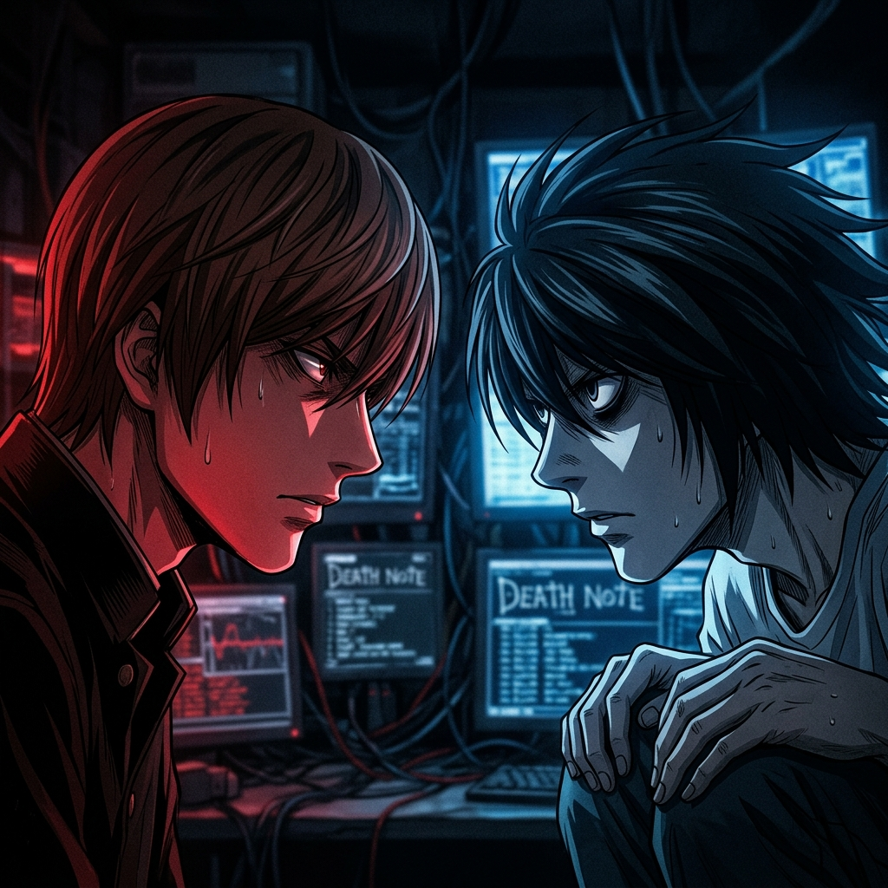
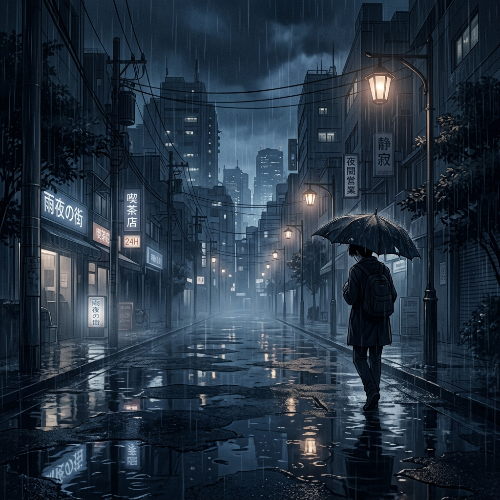

The rain fell with a heavy, rhythmic indifference over the rooftop of the Task Force headquarters. It was cold, biting, and smelled of the inevitable. L stood there, drenched, his white shirt clinging to his skin, staring into the gray abyss of the city.
He knew. He had always known. From the moment Light Yagami sat across from him in that university lecture hall, the game was already over. It wasn't a question of if Light was Kira, but a question of how to prove it before the clock ran out.
The Psychological Chessboard
The battle between Light and L wasn't just a hunt for a serial killer; it was a collision of two identical gods. Both were brilliant, both were bored, and both were terrifyingly committed to their own definition of justice.
L’s greatest strength was his inhuman intuition. He didn't need forensic evidence to know Light was his man. He felt it in the way Light breathed, in the way he reacted to every provocation. But in the world of law, intuition is a ghost.

A battle of wits where the stakes were nothing less than life itself.
The Foot Washing: A Final Farewell
Perhaps the most haunting scene in the series is the washing of the feet. In the middle of the storm, L cleans Light’s feet—a biblical reference to service and sacrifice.
It wasn't a gesture of friendship. It was L’s way of saying, "I know what you are, and I know what you are about to do." He was mourning his own death before it even happened. He was mourning the only person who could truly understand him, even if that person was his murderer.
"I am L." A name that meant everything and nothing at the same time.
Why L Was Too Close to the Truth
L had cornered the Shinigami. He had exposed the rules of the notebook. He was days, maybe hours, away from forcing a confession. He had played a perfect game.
But Light didn't win through intelligence. He won through a variable L could never account for: unconditional love.
The notebook that changed the rules of existence.
The Intervention of Rem
Rem’s love for Misa Amane was the one thing L could not predict because L functioned purely on logic. By placing Misa in danger, Light forced Rem to choose between her own existence and L’s life.
L didn't lose to Light. He lost to a Shinigami who cheated the system of life and death.
The Tragedy of the End
As L fell from his chair, the last thing he saw was Light’s smirk. In that final millisecond, the logic was complete. "I was right."
That was L’s victory. He died knowing the truth, even if the world would never hear it from him. He died alone, in the arms of his enemy, leaving behind a legacy that would eventually consume the God of the New World.

The bell has stopped tolling.
Fans still debate whether L would have won without Rem. The answer is simple: Yes. L had already won the psychological war. Light just decided to flip the table.